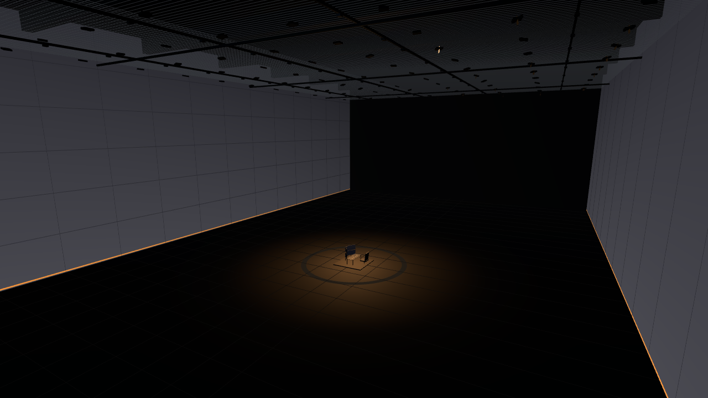
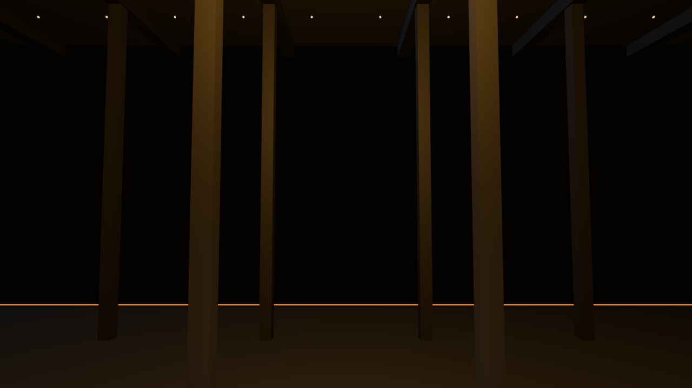
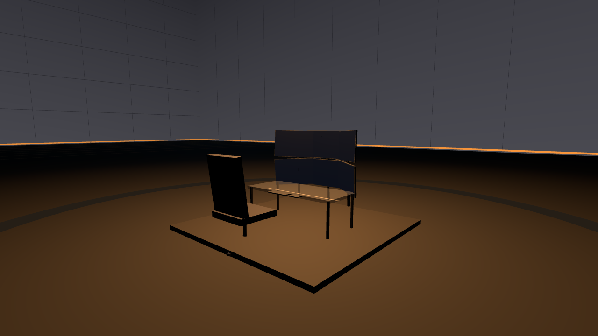
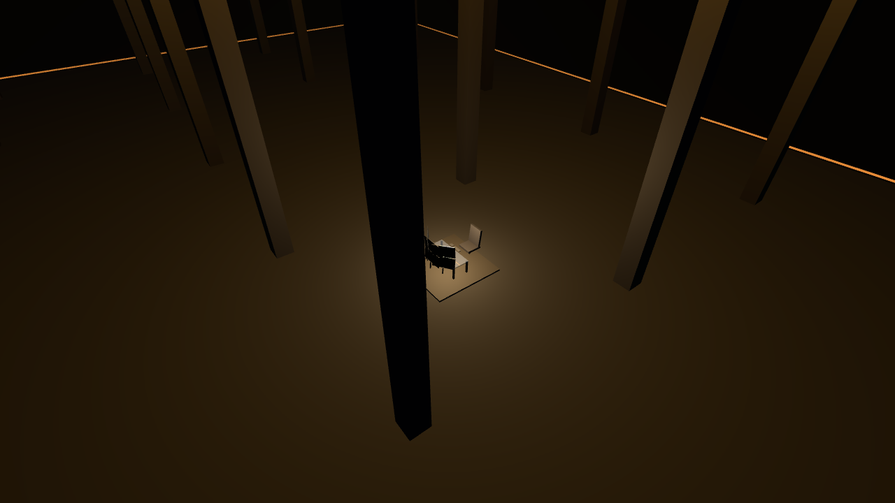

Centered command node, layered visual zones, cinematic depth from wall to wall.
No clutter. No chrome. No gamer RGB. Restraint as a design material.
Zero center supports. The full 320 ft spans clear — uninterrupted volume.
Studio-grade rigging with concealed mechanicals — capability without the factory look.
Idle gradients, virtual seams, slow breathing light. The room feels built, not displayed.
Scored grid, a 20 ft accent ring around the desk — subtle patterning, not decoration.
Ambient, work, cinematic, pulse-reactive — the room changes feeling on command.
Dark, matte, cinematic, precise. Ready for external construction or replication.
Rendered from the exact DEV-01 geometry in cinematic preset — 2800K, 15% intensity, the desk in a pool of light. Numbers are complimentary; this is what building it gives you.

What you feel: you arrive high — no columns. Layered ceiling (truss, void, glowing grid), the command node in its pool of light far below, perimeter falling to darkness. Zone C does its job.

What you feel: the walls breathe — deep neutral gradient, faint virtual seams, calm and empty. One continuous surface, waiting.

What you feel: smoke-grey glass, satin black frame, six 48-inch panels in a 110° arc — powered on, blank. The 20 ft accent ring circles beneath you. The room holds its breath until you begin.

What you feel: you leave the desk and rise through the fog layer. The whole warehouse is navigable airspace — zero latency, no collision, total freedom.
Technical spec is the skeleton; design spec is the body. Both are decided.
Removed: all 32 center columns · placeholder ceiling elements · static fixtures · scaffolding · non-studio ceiling geometry · placeholder furniture · clutter · partial/segmented walls.
Tuned for: soft shadows, volumetrics, and dark environments — the renderer is built for this room.
Ceiling selling points: dark, cinematic, studio-grade · full depth-pass realism (truss → grid → tracks → fixtures) · zero visible clutter, wires, or industrial ugliness · motorized rigs, full DMX/RDM · high-precision PBR on every object · renderer tuned for soft shadows, volumetrics, dark environments.
| Datum | Value |
|---|---|
| room.envelope_ft | 320 × 180 × 90 (runway × balanced × height) |
| room.volume_cuft | 5,184,000 |
| structure.perimeter | 24 in carbon-steel composite · 100% column-free |
| structure.truss | 20×20 ft grid, 6 ft deep, 128 pts × 2,000 lbs |
| display.area_sqft | 90,000 (57,600 + 32,400) |
| display.membrane_in | 2.5 · backplane 18 in · offset 4 in · seam <0.1 mm |
| display.idle_rgb | base (10,10,12) · bottom 20ft (18,18,22) · top 20ft (6,6,8) |
| display.seams | 20 ft vertical / 15 ft horizontal · 1–2 px · drift 0.01–0.02 Hz |
| display.spec | 800 PPI · 480 Hz · <0.5 ms · 12-bit · Pulse Extended HDR |
| display.content | EMPTY |
| render.nodes | 64 virtual · 4.8 TB/s fabric |
| floor.slab | 14 in carbon-polymer · gloss 5–10% · 2–3 mm micro-texture |
| floor.grid | 10×10 ft scored · 1/4 in deep · 1/8 in wide |
| floor.ring | 20 ft radius · 24 in wide · lighter tone |
| floor.anchor_pad | 12×12×18 in · 10,000 lbs · exactly centered |
| ceiling.visible_plane | 84 ft · 6 ft void above (mechanicals, cabling, motors, cooling) |
| ceiling.truss | 20×20 ft · 6 ft deep I-beam · matte black RGB(5,5,7) · gradient (3,3,5)→(8,8,10) |
| ceiling.grid | 400 mm cells · 2×2 in tubes · RGB(8,8,10) · rough 0.65 · metal 0.1 · 6 in below truss |
| ceiling.depth_pass | grid 12 in / truss shadow 6 ft / AO 0.8 / softness 0.4 / fog 0.1 |
| ceiling.tracks | 4×320 ft + 4×180 ft · 6×8 in · anodized RGB(4,4,6) · 64 trolleys @150 lbs · DMX/RDM |
| ceiling.trolley | 10×6×4 in · motor housing 6×6×3 in matte black polymer |
| ceiling.fixtures | 128 · 24×24×6 in · housing RGB(6,6,8) · CRI ≥90 · 2700K–6500K · ±45°/±90° |
| ceiling.barn_doors | 12×8 in flaps · powder-coated steel · 1 in depth |
| ceiling.arms | 18 in long · 1.5 in thick |
| ceiling.lens | frosted polycarbonate · heat sink hidden |
| renderer.v4 | hybrid ray-trace + voxel GI · soft-penumbra ray-march · SSAO + voxel AO · PBR/GGX · filmic · 32-bit depth · 4K normals · bloom 0.1 |
| lighting.presets | ambient 3200K/20% · work 4000K/60% · cinematic 2800K/15% · pulse 4500K |
| desk | 84×36×30 in · 1.25 in glass @20–30% smoke · 1.5 in satin frame · 0 cables |
| monitors | 6×48" 8K 240Hz · 0.25 in bezel · 3-3 arc r=42 in 110° · 28–36 in reach · blank |
| chair | deep charcoal · 5-point matte black base · 360° · no chrome |
| movement | 6DoF · no collision · 3 ft sphere · linear zoom · zero-latency |
| air | 120,000 CFM · 64 diffusers · 32 returns · <10 dB |
| acoustics | 0.4 s reverb · absorption behind membrane |
| atmosphere | very low neutral fog · denser at ceiling · clear 20 ft at desk |
| zones | A center · B 40 ft radius · C dark perimeter |
Every number below was already decided. This section captures what those numbers imply for the build.
The blueprint names exactly four structural materials — glass, steel, fabric, metal — and three tones — black, grey, charcoal. Nothing else enters the room. This isn't minimalism as aesthetic; it's minimalism as discipline. Every new material would be a decision; the blueprint makes that decision once, here.
What this means to build: a material library of exactly seven entries. No variations, no alternatives. If the build needs an eighth material, that's a blueprint change, not a build decision.
320 × 180 × 90 ft — the envelope. 24-inch walls — load-bearing perimeter. 6-foot ceiling void — mechanicals live here, invisible. 2.5-inch fixture details — the smallest decided element. The dimensions aren't just sizes; they're a hierarchy from volume to detail. Nothing is "about" a size — everything IS its size.
What this means to build: model at 1 unit = 1 foot. The dimensional hierarchy is the LOD strategy: envelope → walls → void → fixtures. Each level has exactly one job.
The blueprint specifies the lighting rig in detail — but never says what time it is. A space lit for noon feels different from the same space lit for midnight. The cinematic pools of warm light imply evening, but it's never stated. This is the one decision the blueprint leaves open.
What this means: the build should default to the cinematic evening look (warm pools in darkness), but the blueprint should eventually lock a time-of-day. PL to decide.
9a8f1b8152224f96